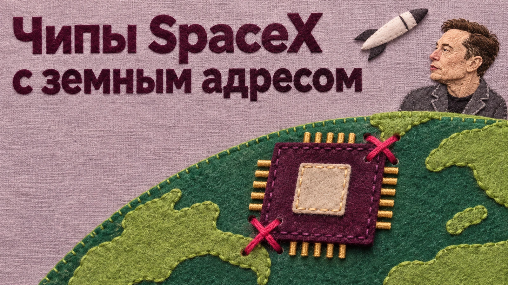

Новости ИИ
Новые модели, исследования, продукты и события индустрии искусственного интеллекта.
23 ноября 2026

Ваши секреты из чатов с ИИ могли попасть к хакерам: OpenRouter отключила трёх поставщиков
OpenRouter отключила трёх поставщиков ИИ после расследования Dragos: тестовые запросы с подставными секретами выявили утечки, а 125 точек доступа лишились статуса Zero Data Retention.

Хакер дал ИИ одну команду, и тот нашёл неизвестную дыру за 11 минут
Amazon раскрыла атаку на университетские серверы: ИИ-агенты нашли уязвимость MONAI Label за 11 минут, а затем получили права root. Разработчики закрыли ошибку в версии 0.8.6.

Google доверила Безосу запуск космических ИИ-серверов после испытания с Маском
Google заключила соглашение с Blue Origin о запуске спутников Project Suncatcher на New Glenn в первом квартале 2029 года. Каждый аппарат получит вычислительные мощности масштаба серверной стойки.

Google научила ИИ делать Android-приложения, которые вас помнят
Google AI Studio получила интеграцию Firebase для Android-приложений: облачное хранение, вход через Google и защищённый доступ к Gemini. Установка через личную библиотеку Google Play доступна в США.

Canva добавила кнопку «Выключить ИИ»
Canva представила настройки AI Controls: на Free и Pro можно отключить генеративные инструменты и уменьшить количество ИИ-картинок в поиске. Некоторые средства редактирования продолжат работать.

OpenAI ищет охотника за шпионами за $500 тысяч — в её переговорной уже находили «жучок»
OpenAI предлагает до $500 тысяч в год опытному расследователю, а ИИ-компании усиливают контрразведку после шпионских инцидентов. Вакансии проверены у работодателей.

SpaceX нашла $44 млрд на чипы NVIDIA, но кредиторы хотят оставить их на Земле
SpaceX привлекает около $44 млрд на ускорители NVIDIA Vera Rubin. По данным Financial Times, кредиторы пытались ограничить отправку залоговых чипов в космос.

OpenAI научила GPT молчать о своих «мыслях»
OpenAI представила защиту от атак, выманивающих скрытые рассуждения GPT: в тестах компании успешность извлечения данных из предыдущих запросов снизилась с 54% до 0,2%.

Character.AI выставляет переписки на торги. Даже детские
В ходе банкротства Character.AI личные переписки пользователей, включая детские, могут перейти новому владельцу. Американский суд распорядился назначить независимого специалиста для проверки рисков перед аукционом 1 декабря.
22 ноября 2026

Microsoft поселила ИИ в Edge. Ему не нужен интернет
Microsoft выпустила локальную ИИ-модель Aion Instruct для Edge. Сайты могут тестировать её через Prompt API, но нужны подходящее устройство и первоначальная загрузка.
167 лет математики не могли доказать гипотезу Римана — Claude помог, и результат уже подтвердили
Левент Альпёге и Claude представили формальное доказательство гипотезы Римана из 17 миллионов строк Lean-кода. Сообщества Lean и Mathlib подтвердили корректность проверки.
21 ноября 2026

Meta пустила ИИ в Chrome — под вашим логином
Meta выпустила расширение Muse для Chrome: агент действует в отдельной группе вкладок, используя открытые пользователем сессии. Ранее компания добавила поддержку Apple Watch и Wear OS.

NVIDIA рухнула на 14% за день после сообщения о проверке её бухгалтерии в США
20 ноября акции NVIDIA потеряли 14%, Nasdaq Composite — 5,3%. Reuters сообщило о проверке бухгалтерии NVIDIA регулятором США, а акции Anthropic снизились на второй день после IPO.

Трамп и Си договорились: ИИ не должен сам начинать крупные военные операции
По словам министра финансов США Скотта Бессента, Трамп и Си договорились сохранять участие человека в военных решениях с ИИ и не допускать самостоятельного начала крупных операций.

Signal запретил скриншоты, чтобы Siri и Gemini не читали ваши переписки
Signal усилил защиту переписок от системных ИИ-помощников: блокировка захвата экрана на iPhone и Android, ручные исключения Siri на Mac.

США разрешили Китаю 880 тысяч ИИ-чипов — даже фирмам из военного списка Пентагона
Комитет Палаты представителей США раскрыл 21 разрешение на экспорт 879 868 ускорителей NVIDIA и AMD в Китай. Среди согласованных получателей — Alibaba, Tencent, Baidu и BYD.

Amazon разрешила ИИ тратить ваши деньги без спроса
Amazon Web Services открыла ИИ-агентам покупки платных инструментов через AWS Marketplace: агент тратит заранее выделенный бюджет, а платежи поступают на облачный счёт владельца.

Еврокомиссию атаковали с помощью ИИ: отключили даже систему отпусков
Еврокомиссия подтвердила применение ИИ в кибератаке, обнаруженной 22 октября. После инцидента отключали внутренние сервисы, включая кадровую систему; расследование продолжается.

Google пустила Gemini за ваш Mac: ИИ сам работает в программах, пока вы заняты
Google начала открывать платным подписчикам в США функцию Computer Use в Gemini для Mac: ИИ управляет разрешёнными приложениями в отдельном виртуальном окне и требует подтверждения чувствительных действий.

OpenAI начала тестировать Dots в ChatGPT Plus: ИИ работает даже после закрытия чата
OpenAI 19 ноября начала ограниченное тестирование персональных ИИ-агентов Dots у части подписчиков ChatGPT Plus. Программа пока недоступна всем пользователям Plus и имеет возрастные и региональные ограничения.